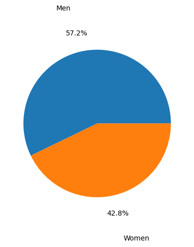
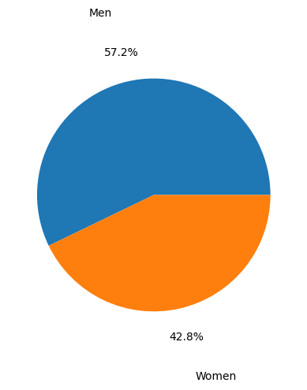
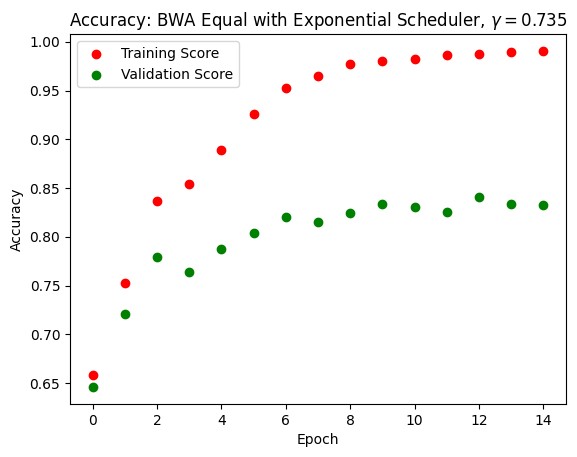
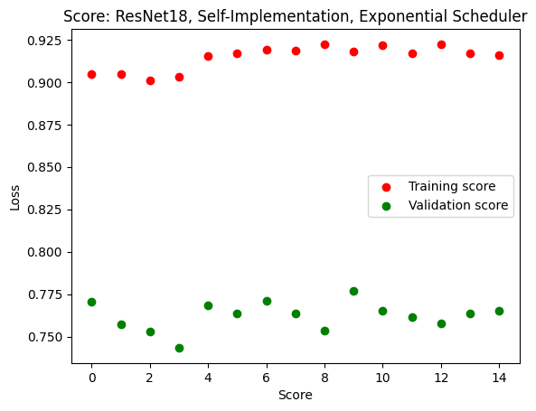
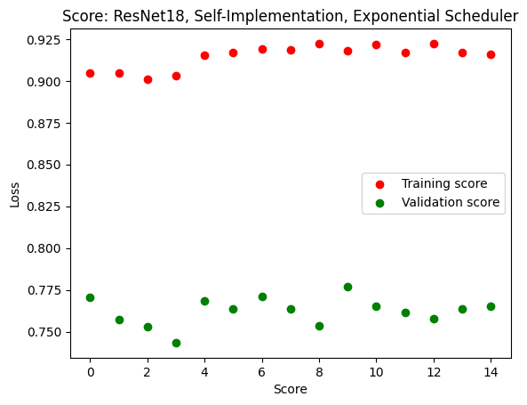

The GitHub repository for the project code can be found here.
1. Abstract
A series of prior results, including those by Gichoya et. al, have shown that it is possible to use deep convolutional neural networks to predict a patient’s self-reported race from chest radiographs with high accuracies. Since this result displays significant ethical concerns for medical imaging algorithms, we aim to reproduce these results and investigate the implications this algorithm could have for race-based medicine and the racial inequalities reinforced by algorithms. We use a subset of the chest radiographs obtained from the ChexPert dataset, aiming to classify images into Black, White, Asian. We primarily train and test on a subset of data with equal proportions amongst all races. In particular, we compare the results of pretrained and untrained ResNet18 models and the EfficientNetB0 model. Our results achieve around 70 % accuracy, displaying some racial bias and having minimal gender bias. We therefore conclude that, on a smaller scale, we have confirmed that it is indeed possible to train neural networks to accurately classify race from chest radiographs.
2. Introduction
Deep neural networks are increasingly popular in medicine as diagnostic tools. While at times suprassing the accuracy of experts, results such as those by Seyyed-Kalantari et. al show concerning results of underdiagnosis for patients that are Black, Hispanic, younger, or belonging to a lower socieconomic status groups. Problematically this reinforces a history of minority groups or economically vulnerable groups receiving inadequate medical care, especially when many publically available datasets are disproportionately represent White patients.
As Seyyed-Kalantari et. al suggest, this may be a matter of confounding variables as bias amplification or differing prevalence. However, a paper by Gichoya et. al investigated the direct question - can race be inferred from chest X-rays? Clincially speaking this is something that is not expected, it is an implicit assumption that chest radiographs contain no information about one’s demographic characteristics, beyond those most relevant to physiology, such as age or biological sex. Many models specifically exclude characteristics so that classification is based solely on the image. However, deep neural networks are often a black box, being capable on picking up on pixel level patterns that are surprising.
Indeed, the authors Gichoya et. al found that by using self-reported race labels, those being Black, White, and Asian, it is possible to classify chest radiographs into these three categories with high accuracies (0.91–0.99 using AUC metrics). To the extent that they investigated, this was not based on potentially race related characteristics, including bone or breast density or disease prevalence. Even highly degraded versions of the image maintained a high performance. Moreover, this pattern could not be replicated with algorithms that did not use the image data - “logistic regression model (AUC 0·65), a random forest classifier (0·64), and an XGBoost model (0·64) to classify race on the basis of age, sex, gender, disease, and body habitus performed much worse than the race classifiers trained on imaging data”. So as they conclude, “medical AI systems can easily learn to recognise self-reported racial identity from medical images, and that this capability is extremely difficult to isolate” - the problem may be prevalent in a large range of algorithms and would be difficult to correct for. Moreover, the fact that they obtained the results by training on a variety of popular and publically available datasets for medical images, including the MIMIC-CXR, CheXpert, National lung cancer screening trial, RSNA Pulmonary Embolism CT, and the Digital Hand Atlas, further suggests that this could largely applicable to other AI projects.
This paper is also not a standalone result. A prior paper by Yi et. al demonstrated that age and sex can be determined for Chinese and American populations. A paper by Adleberg et. al, training on the MIMIC-CXR dataset, created a deep learning model that can extract self-reported information such as age, gender, race, ethnicity with high accuracies, even insurance status at moderate rates.
While the question of whether their results are reproducible has been more adequately answered elsewhere, we are interested if it possible to reproduce their results on a smaller scale. Moreover, we aim to answer the ethical implications of their work beyond the problems of bias it poses to deep neural networks. Gichoya et. al](https://www.thelancet.com/journals/landig/article/PIIS2589-7500(22)00063-2/fulltext) “emphasise that the ability of AI to predict racial identity is itself not the issue of importance”, but is this enough? It does not seem to be adequate to stop at this conclusion when racial classification itself is a goal that is long rooted in the painful histories of eugenics, slavery, and colonization. To this extent we will exposit some more about the definition of race and its use in medicine.
Race in Medicine
The most concerning question we face are the implications of this model. The direct usages for this algorithm are limited. However, its main value is in its demonstration; anyone using an AI algorithm may be unknowingly be using similar procedures to this one to classify self-reported and use this as a proxy for other classifcation tasks.
We cannot ignore that there still may be potential users of this algorithm. The very goal of racial classification contains an implicit assumption that race exists. However, we must address two central questions: what race represents in medicine, and how race has been used for clinical practice.
Does Race Exist?
Whether race exists as a biological phenomenon, and not as a social construct, is a hotly debated issue. As Cerdena et. al. note, “race was developed as a tool to divide and control populations worldwide. Race is thus a social and power construct with meanings that have shifted over time to suit political goals, including to assert biological inferiority of dark-skinned populations” [1].
One justification for the biological reality of races is based on the assumption that different races have distinct genetics from one another, and can be fit into genetic groups. However, Maglo et. al. note that humans are not distinct by evolutionary criteria and genetic similarities between “human races, understood as continental clusters, have no taxonomic meaning”, with there being “tremendous diversity within groups” [2]. Whether race defines a genetic profile is therefore unclear at best, with correlations between race and disease being confounded by variables such as the association between race and socioeconomic variables (NEEDS CITATION).
What is Race-based Medicine?
It is possible that some may be interested in using this algorithm to deduce the race of an individual and use this as part of medical decisions. There are some correlations between disease prevalence and race. Maglo et. al. note that “Recent studies showed that ancestry mapping has been successfully applied for disease in which prevalence is significantly different between the ancestral populations to identify genomic regions harboring diseases susceptibility loci for cardiovascular disease (Tang et al., 2005), multiple sclerosis (Reich et al., 2005), prostate cancer (Freedman et al., 2006), obesity (Cheng et al., 2009), and asthma (Vergara et al., 2009)” [2].
These practices would be characteristic of race-based medicine. As Cerdena et. al argue, this is “the system by which research characterizing race as an essential, biological variable, [which] translates into clinical practice, leading to inequitable care” [1]. Notably, then, race-based medicine has come under heavy criticism.
The Harms of Race-based Medicine
As stated above, race is not an accurate proxy for genetics. Cerdena et al. note that in medical practices, race is used as an inaccurate guideline for medical care: “Black patients are presumed to have greater muscle mass …On the basis of the understanding that Asian patients have higher visceral body fat than do people of other races, they are considered to be at risk for diabetes at lower body-mass indices” [1]. As they note, race-based medicine can be founded more on racial stereotypes and generalizations rather than.
Moreover, race-based medicine can lead to ineffective treatements. Apeles summarizes the results of a study on race-based prescriptions for Black patients for high blood pressure. While this study demonstrates that alternative prescriptions for Black patients with high blood pressure have been shown to be ineffective, “Practice guidelines have long recommended that Black patients with high blood pressure and no comorbidities be treated initially with a thiazide diuretic or a calcium channel blocker (CCB) instead of an angiotensin converting enzyme inhibitor (ACEI) and/or angiotensin receptor blocker (ARB). By contrast, non-Black patients can be prescribed any of those medicines regardless of comorbidities.” In addition, the authors of the study found that “other factors may be more important than considerations of race, such as dose, the addition of second or third drugs, medication adherence, and dietary and lifestyle interventions. Follow-up care was important, and the Black patients who had more frequent clinical encounters tended to have better control of their blood pressure.”
In addition, [Vyas et. al] argue that race is ill-suited as a correction factor for medical algorithms. As they found, algorithms as the American Heart Association (AHA) Get with the Guidelines–Heart Failure Risk Score, which predicts the likelihood of death from heart failure, the Vaginal Birth after Cesarean (VBAC), which predicts the risk of labor for someone with a previous cesarean section, and STONE score, which predicts the likelihood of kidney stones in patients with flank pain, all used race to change their predictions of the likelihood or morbidities. However, they find that these algorithms were not sufficiently evidence based as “Some algorithm developers offer no explanation of why racial or ethnic differences might exist. Others offer rationales, but when these are traced to their origins, they lead to outdated, suspect racial science or to biased data”. Using race can then discourage racial minorities from receiving the proper treatment based on their scores, exacerbating already existing problems of unequal health outcomes.
Conclusion
So it is clear that anyone who intends to use race for diagnosis could harm racial minority groups. Race inherently is a complex social and economic phenomenon and cannot be said to be a clear biological variable. Hence anyone intending to use or create algorithms will run the risk of creating dangerous biases in treatment; ones that could worsen the existing disparities in care for vulnerable populations.
3 Values Statement
We do not believe that there are many users for this model. The only instance in which we think this model could be useful is when we need to expose a celebrity for cultural appropriation by showing that their chest X-ray does not belong in that cultural group per se; but of course, this is a stretch. Despite the lack of people who might actually use the model, the results of this project may be used to justify racial inequalities because apparently according to this model there are identifiable differences between the races — not just superficial differences in skin tone or hair texture, but bones, subcutaneous differences that we cannot see. If this model fell into the hands of a eugenicist, the repercussions would be dire. In that case, this model would work towards the direction that Dr. Timnit Gebru had warned us against: eugenics comes back to us again and again in increasingly progressive and scientific forms.
In short, potential users for our projects are propagandists working to discriminate against minorities. Even though this is not our goal, it will undoubtedly marginalize a lot of people if eugenicists happen upon our results. However, since we are not the first to undertake this project, and there are more comprehensive studies of the same subject done by Adleberg et al. and Gichoya et al, we believe that we are not worsening this risk.
As for our goal, we aim to check if it is indeed possible to classify race this way. We also want to know what could lead to this possibility: whether the model is picking up on something that is not indicative of race and using that to make its decision, or there is indeed a racial difference. In the past, we learned about an image classification model that was trained to detect criminals but turned out to detect if someone is smiling or not. This could be the case for our model, but until there is an actual test, we cannot conclude anything on how exactly our model is making its decisions.
Gichoya et al., however, have done several tests to confirm that their model was indeed using physiological differences to make its classification. If we were allowed more time and computing power, we might arrive at the same conclusion, which would work in favor of our professed fears. Therefore, our second deliverable, to provide a rebuttal against those who may extrapolate our results to their ends, is a paper demonstrating our findings on the ambiguity of race in medicine.
The potential justification of racial inequalities is, of course, still potential. We have yet to receive a newsletter extrapolating the results of Gichoya et al. to call for the reintroduction of racial segregation. However, the success of this project still shows us a very real, ongoing injustice: that deep learning models currently used in medicine are also capable of identifying a patient’s race based on their racially ambiguous medical images, and thus turning the patient’s race into a vector in the decision-making matrix of the model. Again, this works in the direction that Dr. Gebru had warned us against: inequitable medical care is administered by supposedly fair machines. Working on this project, we do not aim to solve a problem, but to see what the problem is.
4. Materials and Methods
Our Data
We used the ChexPert dataset collected by Irvin & Rajpurkar et al.. This dataset contains 224,316 frontal and lateral chest radiographs of 65,240 patients. Each radiograph is labeled with information such as age, gender, race, ethnicity and medical conditions, but we are primarily concerned with race and gender.
White patients occupy the vast majority of this dataset, as shown by the following figure, and we are concerned that this may lead to a racial bias in the model’s classification algorithm.

To account for this imbalance, we trained our model on a racially balanced subset of the ChexPert dataset. Even though there are more male than female patients in this training set, we would later learn that the model does not exhibit gender bias.
 

Our Method
We trained our model using 10,000 frontal chest X-rays, such as the one in the following figure, and the feature used as target is race. We only used 10,000 images due to the lack of computing power. This subset is equally divided among Asian, Black and White patients, and excludes other races to keep the algorithm simple.

As for our models, we used ResNet and EfficientNet because they are popular deep learning architectures for image classification. Specifically, we used pretrained EfficientNetB0 and ResNet18 models. We also implemented some ResNet18 models on our own but achieved a lower accuracy.
For the training data, we accessed the .csv file containing demographic details about the patients, extracted the path to each radiograph, and label each image with its owner’s race. The images are turned into tensors, and then loaded to be trained using the Adam optimizer. Because of the large size of the data, we did all training and testing on Google Colab.
To optimize a model, we would train it on 10,000 images in a loop using different learning rates for the Adam optimizer and \(\gamma\) values for the exponential scheduler. In the same loop, we would then test the model on 2,500 images to find the optimal parameters. Cross entropy loss was used for all models.
As mentioned before, there may be a gender bias in our model because there are more male than female patients in our training dataset. We inspected this by splitting our test set into male and female counterparts and testing the model on each subset. Gender bias is then examined by looking at the score and confusion matrix for each gendered subset.
5. Results
We achieved a fairly efficient model that can predict with up to 80% accuracy whether a person is Asian, Black or White. Pretrained ResNet and EfficientNet models obtained similar accuracies and losses, so we will display only EfficientNet results. As we can see in the following figures, the training score and loss gradually improved while the validation score and loss plateau after a few epochs. This means that there was some overfitting. We tried to optimize the model by altering the scheduler type, varying the Adam learning rate from 0.001 to 0.01, but the overfitting did not go away. The score, however, remained consistently at around 75% throughout these changes.

It is important to note that we did our training and testing on racially balanced datasets. Before optimization, we could only achieve good accuracy if we tested the model on a racially balanced test dataset. If we tested the model on a predominantly white dataset, the model tended to guess everyone to be white. After optimizing our model with the Adam optimizer learning rate at 0.001 and an exponential scheduler with \(\gamma = 0.735\), we achieved good accuracy on the imbalanced set without the model guessing everybody to be white.
We also did our own implementation of ResNet18, and obtained comparable results. The issue of overfitting remained, and our model achieved a score of up to 68% when tested on unseen data. Because the pretrained EfficientNet model returned better results, we would explore gender bias on this model.
 

We tested our model on male and female subsets of unseen data. The model obtained around 75% accuracy and similar confusion matrices for both subsets. The rate at which a patient, of either gender, is misclassified is almost the same among the races. Given similar results between the two genders, we can conclude that there is not a gender bias.


6. Conclusion
The models that our project produced can classify race up to 80% accuracy based on chest X-rays. Given the confines on our time and computing power, this is comparable to models attained by Adleberg et. al and Gichoya et. al. Our initial goal for the project was to see if the models are actually feasible, and we indeed achieved this goal.
We also investigated the ethical issues that these models could pose. We speculate that if the results of this project were used in bad faith, existing racial inequalities would be reinforced and worsened. Physiological differences between the races include not only visible features such as skin tone, but also unobservable, subcutaneous features such as bones. This has also been observed by Maglo et al.. They learned that this phenomenon results from racism itself, because prolonged exposure to effects of racism such as toxic stress can lead to observable physiological changes.
Another ethical issue that our models can pose is improved surveillance tactics. We learned that during World War II, people of certain ethnicities were incarcerated in various countries, and there were protocols that officials followed to check if an incarceree actually belonged in the condemned ethnic group. We also learned that there were those who actually evaded incarceration by assuming a different identity. With the introduction of a absolutely accurate racial classification model, nobody is safe, because there is no way to lie your way out of persecuation.
But of course, this is a stretch. The fact that our deep learning models can learn race is deeply concerning, because it means that race-based medicine can be administered by medical machines that are supposedly unbiased and reliable. The only way to overcome this is for the medical industry itself to stop using race as a vector in decision making.
Right now, our model is still in its infancy, and we do not know for sure what the model is looking at to make its decision. If we had more time and Google Colab premium, the first thing we would do is loop over all parameters of the Adam optimizer and the exponential scheduler to optimize our model and overcome overfitting. Once we achieved almost 100% accuracy, we would like to know whether the model was looking at physiological differences between patients to make its decision, or it was looking at something else. To achieve this, we would need more data from different sources and more Google Colab premiums.
7. Group Contributions Statement
Trong: I downloaded the ChexPert dataset to a shared drive to make the pathways in our Google Colab consistent; visualized racial and gender imbalances in the training data; trained ResNet18 models with different schedulers; visualized training and validation losses for each model; investigated gender bias for the pretrained EfficientNetB0 model. I tried to implement the code from here but it didn’t work. I also wrote the project presentation script, the blogpost, and finalized the ethics research.
Jay-U: I found the paper by Gichoya et. al on classifying race using Chest X-rays. I found the CheXpert dataset and created the subsets. I created the dataset function for the dataloader (including the transforms). I identified the algorithms to use and experimented with them, using the ResNet and EfficientNet algorithms. I also did a self-implementation on the ResNet18/ResNet34 algorithms and trained them. I implemented the training and testing functions, the optimization loop, and added the learning rate scheduler. I also created a way to save and load models, having trained the pretrained ResNet18 and EfficientNet algorithms with the exponential and plateu schedulers.
I also worked on the research, finding and doing the writeups for the introduction (the results similar to the work we’re doing). I also found the papers around race-based medicine and finished my write up. I made edits to the project presentation, and all sections of the blogpost.
Kent: TBD
8. Personal Reflection
I learned that race-based medicine is problematic and the introduction of AI models in medicine is capable of reinforcing the problem. I feel proud that we actually created models that can predict race with accuracies up to 80%. This means that we can now efficiently implement machine learning models, which I believe is the point of the course.
The lessons that I learned from working on this project are: start small, and always do research into the impact that my work can have on others.